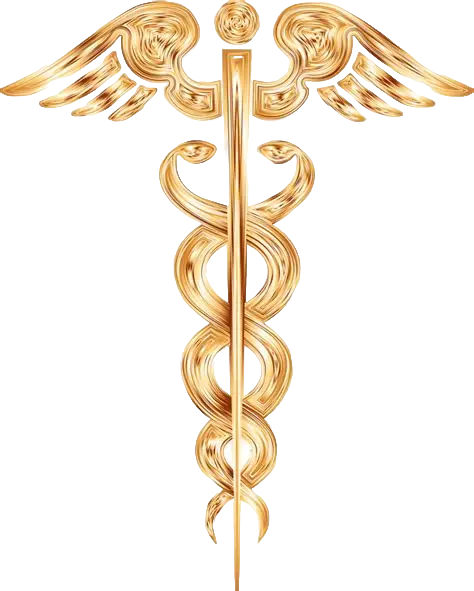

Лече́бная физи́ческая культу́ра (ЛФК)
Лече́бная физи́ческая культу́ра (ЛФК) — медицинская дисциплина, применяющая средства физической культуры (в основном — физические упражнения) с целью лечения и реабилитации больных и инвалидов, а также профилактики заболеваний[1]. Для увеличения эффективности упражнений в задачи ЛФК входит использование педагогических средств воздействия: выработка у пациента уверенности в своих силах, сознательного отношения к проводимым занятиям и необходимости принимать в них активное участие
Плоскостопия
Профилактика плоскостопии:
- Формирование правильной походки, не разводить носки при ходьбе – это перегружает внутренний край стопы и его связки.
- С предрасположенностью к плоскостопию правильно выбирать место работы (работу, не связанную с длительными нагрузками на ноги).
- Отдых при длительном стоянии или хождении.
- Правильно подобранная обувь, на толстой и мягкой подошве, каблук — не более 4 см.
- Ношение стелек-супинаторов при длительных нагрузках.
- В свободное время давать отдых ногам, не менее 30 секунд, 3-4 раза в день вставать на внешние стороны стоп.
- После работы рекомендуется принять теплые ванны для ног с их последующим массажем.
- Хождение босиком по неровной поверхности, по камешкам, по песку, ходьба на пятках, внутренней поверхности стоп, цыпочках, подвижные игры.
- Максимально ограничить ношение обуви на высоком каблуке.
- Правильно дозировать физическую нагрузку, избегать чрезмерных нагрузок